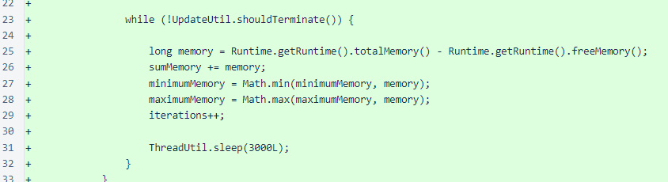
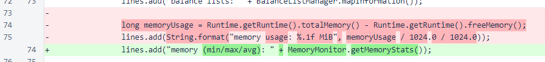
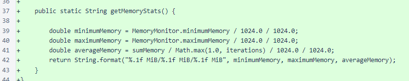
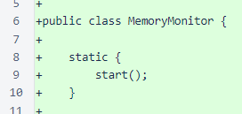

Nyzo version 483 (commit on GitHub) improves memory usage reporting for the verifier.
This version does not alter behavior of the verifier or the sentinel. It is for verifier monitoring purposes only.
In version 481, memory usage was added to the status response. However, the value returned was calculated the moment the status response was generated. Such a value is useful, but a sampling of memory usage at many different times gives more insight into the overall performance of the verifier.
A new class, MemoryMonitor, was added in this update. The class starts a thread that checks memory usage at a 3-second interval. This is frequent enough to get a reasonable picture of overall memory usage but infrequent enough that its computational burden is negligible. The class stores the minimum, maximum, and sum memory usage. The sum is later used to calculate average usage.
In the StatusResponse class, the previous memory line has been replaced with the information provided by the MemoryMonitor class.
The memory values are provided in mebibytes (MiB). A small protection is provided to avoid division by zero when the iterations value is zero.
The monitoring thread is started in a static block in the MemoryMonitor class. So, the thread will be automatically started when the class is loaded. Oracle has a page with a good explanation of how static initializers work.
